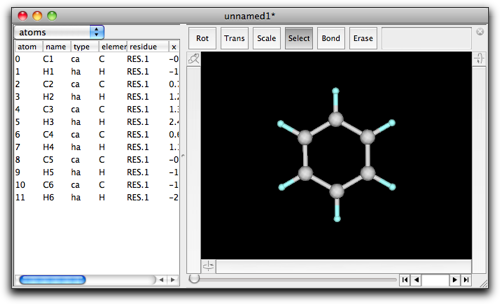
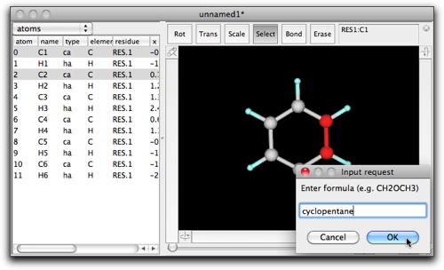
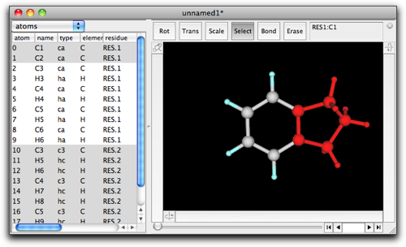
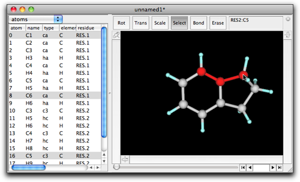
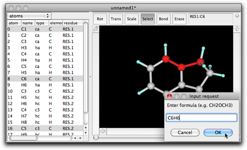
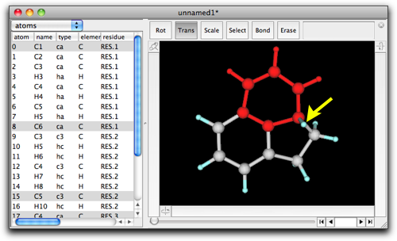
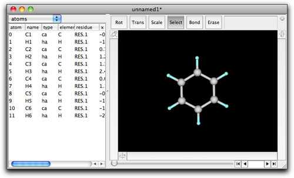
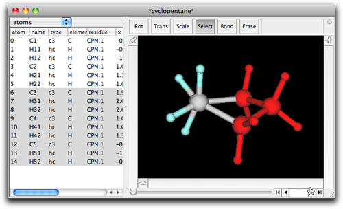

Step Four: Ring Fusion
1. Ring fusion by double-click and type-in
Molby has a capability to create a fused ring structure. As an example, here is presented yet another method to make indane. This time, we start from a benzene.

Choose "select" mode, and select C1 and C2 by clicking on the C1-C2 bond.

Double-click on the selection, and enter "cyclopentane" in the dialog box.

After pressing "OK", you will see a five-membered ring fused to the benzene ring.

Ring fusion also works when three or more atoms are selected in the original structure. For example, select the consecutive three carbons in indane as follows.

Double-click on the selection, and enter "C6H6" (or "benzene").

Now we have acenaphthene...almost.

As shown in the above figure, there is an extra, leftover hydrogen atom on one bridgehead carbon. After all, Molby is not so smart --- it just removes one hydrogen from each terminal carbon atoms in the selection, and connect a portion of the fusing fragment ("benzene" in this case) so that the newly created ring has the same number of atoms. Consequently, the stereochemistry may become strange when sp3 carbons are present either in the original structure or in the fusing fragment. You may need to remove/append hydrogen atoms and clean up structures (see "Energy Minimization" for detail).
2. Ring fusion by copy-and-paste
There is another way to make a ring fused structure, which includes copy and paste. Starting again from a benzene.

Open the "File" menu, and select "Open Predefined" → "Alicyclic" → "cyclopentane".

A new window named "*cyclopentane*" opens with one cyclopentane molecule. Select a portion containing three CH2 groups, and copy it by command-C or ctrl-C.

Return to the benzene molecule again, and this time select H1 and H2 (not C1 and C2).

Do paste by command-V or ctrl-V. You now get a indane molecule.

This "copy-and-paste" actually works in a similar way to previously described example (see "Cut/Copy/Paste"). When both the current selection and the fragment in the pasteboard have two terminals, they are connected and ring fusion takes place. This method of ring fusion is slightly more complicated than the "double-click and type-in" method, but it may be easier to understand.